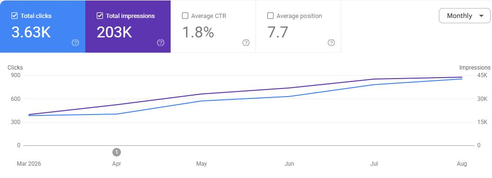
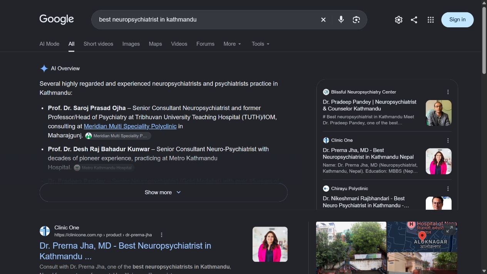
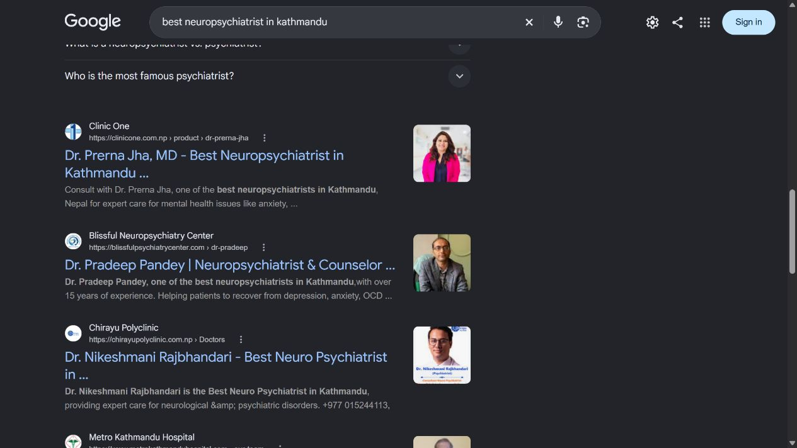

How people searching for a psychiatrist found Blissful
Blissful Neuropsychiatry Center
Bansbari, Kathmandu
3,634
Google Search clicks · March–August 2026
203,187 impressions · all queries


What changed in Search
After filtering out the clinic name and common clinician-name variants, clicks rose from 89 in March–May to 230 in June–August 2026. Impressions went from 17,057 to 27,348. Across the six months, the report showed 319 clicks and 44,405 impressions.
Google Search Console, Web search, March 1 through August 31, 2026. The filter excluded variants of “Blissful” and common clinician names or surnames, including Pradeep, Pradip, Pandey, Dinuja and Khadka. Google may omit some queries from filtered reports.
AI Overview for “best neuropsychiatrist in kathmandu”

A search result for “best neuropsychiatrist in kathmandu”

Searches that brought people to the site
- “best neuropsychiatrist in kathmandu” · 23 clicks from 289 impressions
- “best psychiatrist in kathmandu” · 19 clicks from 1,214 impressions
- “psychiatrist in kathmandu” · 13 clicks from 993 impressions
- “psychiatrist near me” · 6 clicks from 395 impressions

Blissful Neuropsychiatry Center is in Bansbari, Kathmandu. Early on, people mainly found the site through searches for the clinic by name. I worked on helping it appear when someone searched for a psychiatrist or neuropsychiatrist in Kathmandu. Blissful’s clinic details
The searches I wanted to reach
“Psychiatrist in Kathmandu” tells you two things about the person searching. They know the kind of care they’re looking for, and they know where they need it. My focus was to help that person reach a page that explains what Blissful offers and how to get in touch.
Google Business Profile
The search can end on Maps, especially if someone wants to call or get directions. For Blissful, the details I’d look for on the listing are the Bansbari address, hours, contact options and a link to the clinic’s site. Those are the details someone needs to plan a visit.